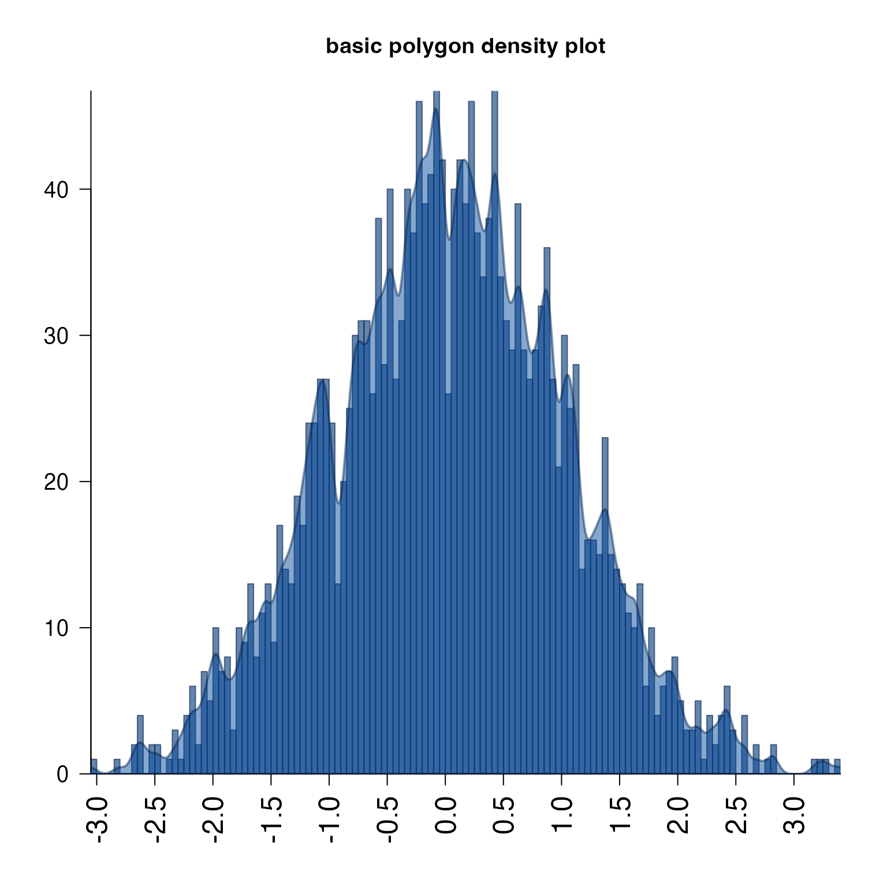
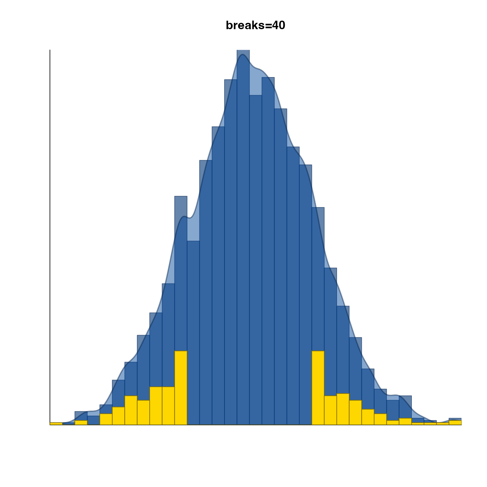
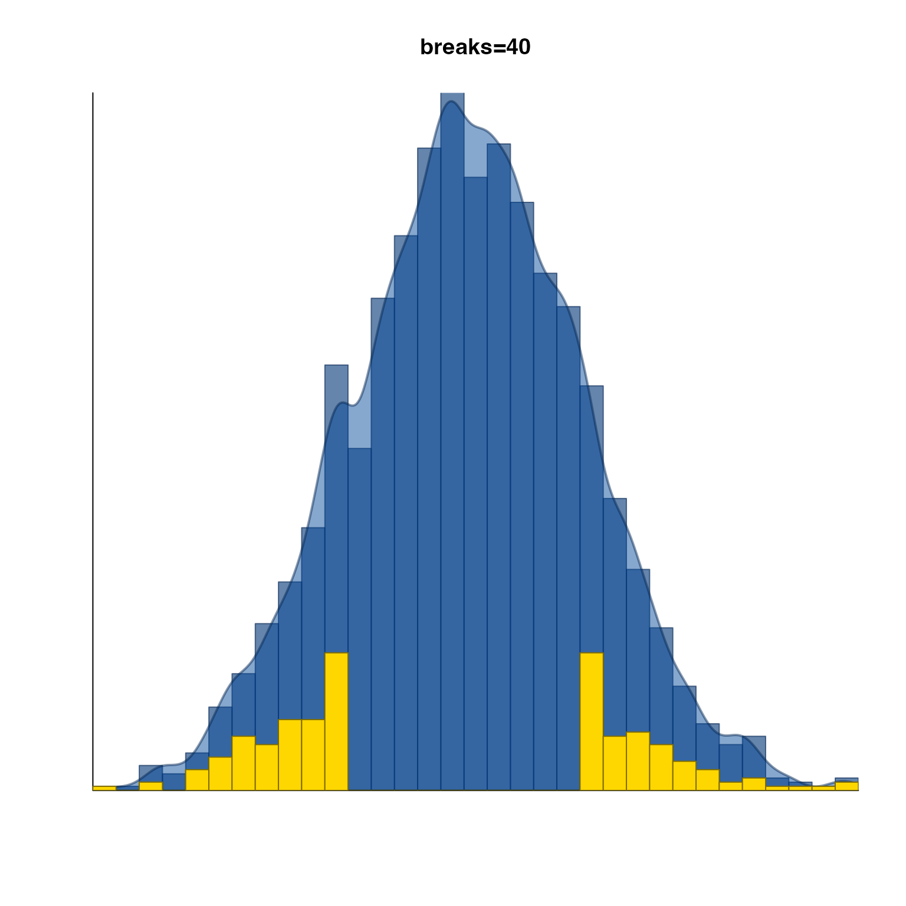

Plot distribution and histogram overlay
plotPolygonDensity(
x,
doHistogram = TRUE,
doPolygon = TRUE,
col = NULL,
barCol = "#00337799",
polyCol = "#00449977",
polyBorder = makeColorDarker(polyCol),
histBorder = makeColorDarker(barCol, darkFactor = 1.5),
colAlphas = c(0.8, 0.6, 0.9),
darkFactors = c(-1.3, 1, 3),
lwd = 2,
las = 2,
u5.bias = 0,
pretty.n = 10,
bw = NULL,
breaks = 100,
width = NULL,
densityBreaksFactor = 3,
axisFunc = axis,
bty = "l",
cex.axis = 1.5,
doPar = TRUE,
heightFactor = 0.95,
weightFactor = NULL,
main = "Histogram distribution",
xaxs = "i",
yaxs = "i",
xaxt = "s",
yaxt = "s",
xlab = "",
ylab = "",
log = NULL,
xScale = c("default", "log10", "sqrt"),
usePanels = TRUE,
useOnePanel = FALSE,
ablineV = NULL,
ablineH = NULL,
ablineVcol = "#44444499",
ablineHcol = "#44444499",
ablineVlty = "solid",
ablineHlty = "solid",
removeNA = TRUE,
add = FALSE,
ylimQuantile = 0.99,
ylim = NULL,
xlim = NULL,
highlightPoints = NULL,
highlightCol = "gold",
verbose = FALSE,
...
)Arguments
- x
numericvector, ornumericmatrix. When a matrix is provided, each column in the matrix is used as its own data source.- doHistogram
logicalindicating whether to plot histogram bars.- doPolygon
logicalindicating whether to plot the density polygon.- col
charactercolor, or whenxis supplied as a matrix, a vector of colors is applied to across plot panels. Note thatcolwill override all colors defined forbarCol,polyCol,histBorder,polyBorder.- barCol, polyCol, polyBorder, histBorder
charactercolors used whencolis not supplied. They define colors for the histogram bars, polygon fill, polygon border, and histogram bar border, respectively.- colAlphas
numericvector with length 3, indicating the alpha transparency to use for histogram bar fill, polygon density fill, and border color, respectively. Alpha transparency should be scaled between 0 (fully transparent) and 1 (fully opaque). These alpha transparency values are applied to each color incolwhencolis defined.- darkFactors
numericused to adjust colors whencolis defined. Values are applied to histogram bar fill, polygon density fill, and border color, respectively, by callingmakeColorDarker().- lwd
numericline width.- las
integerused to define axis label orientation.- u5.bias, pretty.n
numericarguments passed to tobase::pretty()to define pretty axis label positions.- bw
characterstring of the bandwidth name to use in the density calculation, passed tojamba::breakDensity(). By defaultstats::density()calls a very smooth density kernel, which obscures finer details, so the default injamba::breakDensity()uses a more detailed kernel.- breaks
numericbreaks sent tohistto define the number of histogram bars. It can be in the form of a singleintegernumber of equidistant breaks, or anumericvector with specific break positions, but remember to include a starting value lower the the lowest value inx, and an ending value higher than the highest value inx. Passed tobreakDensity().- width
numericpassed tobreakDensity().- densityBreaksFactor
numericscaling factor to control the level of detail in the density, passed tobreakDensity().- axisFunc
functionoptionally used in place ofaxis()to define axis labels.- bty
characterstring used to define the plot box shape, seebox().- cex.axis
numericscalar to adjust axis label font size.- doPar
logicalindicating whether to applypar(), specifically whenxis supplied as a multi-column matrix. WhendoPar=FALSE, no panels nor margin adjustments are made at all.- heightFactor
numericvalue indicating the height of the y-axis plot scale to use when scaling the histogram and polygon density within each plot panel.- weightFactor
numericpassed tobreakDensity().- main
charactertitle to display above the plot, used only whenxis supplied as a singlenumericvector. Otherwise each plot title uses the relevantcolnames(x)value.- xaxs, yaxs, xaxt, yaxt
characterstring indicating the type of x-axis and y-axis to render, seepar().- xlab, ylab
characterlabels for x-axis and y-axis, respectively.- log
charactervector, optionally containing"x"and/or"y"to to indicate which axes are log-transformed. If"x" %in% logthen it setsxScale="log10", both methods are equivalent in defining the log-transformation of the x-axis.- xScale
characterstring to define the x-axis transformation:"default"applies no transform;"log10"applies a log10 transform, specificallylog10(x + 1)"sqrt"applies a sqrt transform.
- usePanels
logicalindicating whether to separate the density plots into panels whenxcontains multiple columns. WhenuseOnePanel=FALSEthe panels will be defined so that all columns will fit on one page.- useOnePanel
logicalindicating whether to define multiple panels on one page. ThereforeuseOnePanel=TRUEwill create multiple pages with one panel on each page, which may work well for output in multi-page PDF files.- ablineV, ablineH
numericvector representing abline vertical and horizontal positions, respectively. These values are mostly helpful in multi-panel plots, to draw consistent reference lines on each panel.- ablineVlty, ablineHlty
numericorcharacterindicating the line type to use forablineVandablineH, respectively.- removeNA
logicalindicating whether to remove NA values prior to running histogram and density calculations. Presence of NA values generally causes both functions to fail.- add
logicalindicating whether to add the plot to an existing visualization.- ylimQuantile
numericvalue between 0 and 1, indicating the quantile value of the densityyvalues to use for the ylim. This threshold is only applied whenylimis NULL.- ylim, xlim
numericy-axis and x-axis ranges, respectively. When either isNULL, the axis range is determined independently for each plot panel. Either value can be supplied as alistto control the numeric range for each individual plot, relevant only whenxis supplied as a multi-column matrix.- highlightPoints
charactervector of optional rownames, orintegervalues with row indices, for rows to be highlighted. Whenxis supplied as amatrix,highlightPointscan be supplied as alistof vectors, referring to each column inx. When rows are highlighted, the plot is drawn with all points, then the highlighted points are drawn again over the histogram bars, and polygon density, as relevant.- highlightCol
charactervector of colors to use to fill the histogram whenhighlightPointsis supplied. Multiple values are recycled one per column inx, ifxis supplied as a multi-column matrix.- verbose
logicalindicating whether to print verbose output.- ...
additional arguments are passed to relevant internal functions.
Details
This function is a wrapper around graphics::hist() and
stats::density(), with enough customization to cover
most of the situations that need customization.
For example log="x" will automatically log-scale the x-axis,
keeping the histogram bars uniformly sized. Alternatively,
xScale="sqrt" will square root transform the data, and
transform the x-axis while keeping the numeric values constant.
It also takes care of scaling the density height to be reasonably similar to the histogram bar height, using the 99th quantile of the y-axis value, which helps prevent outlier peaks from dominating the y-axis range, thus obscuring interesting smaller features.
If supplied with a data matrix, this function will create a layout
with ncol(x) panels, and plot the distribution of each column
in its own panel, using categorical colors from
colorjam::rainbowJam().
By default NA values are ignored, and the distributions are the non-NA values.
Colors can be controlled using the parameter col, but can
be specifically defined for bars with barCol and the polygon
with polyCol.
See also
Other jam plot functions:
adjustAxisLabelMargins(),
coordPresets(),
decideMfrow(),
drawLabels(),
getPlotAspect(),
groupedAxis(),
imageByColors(),
imageDefault(),
minorLogTicksAxis(),
nullPlot(),
plotRidges(),
plotSmoothScatter(),
shadowText_options(),
shadowText(),
showColors(),
smoothScatterJam(),
sqrtAxis(),
usrBox()
Examples
# basic density plot
set.seed(123);
x <- rnorm(2000);
plotPolygonDensity(x, main="basic polygon density plot");

# fewer breaks
plotPolygonDensity(x,
breaks=20,
main="breaks=20");
 # log-scaled x-axis
plotPolygonDensity(10^(3+rnorm(2000)), log="x",
breaks=50,
main="log-scaled x-axis");
# log-scaled x-axis
plotPolygonDensity(10^(3+rnorm(2000)), log="x",
breaks=50,
main="log-scaled x-axis");
 # highlighted points
set.seed(123);
plotPolygonDensity(x,
highlightPoints=sample(which(abs(x) > 1), size=200),
breaks=40,
main="breaks=40");
# highlighted points
set.seed(123);
plotPolygonDensity(x,
highlightPoints=sample(which(abs(x) > 1), size=200),
breaks=40,
main="breaks=40");
 # hide axis labels
set.seed(123);
plotPolygonDensity(x,
highlightPoints=sample(which(abs(x) > 1), size=200),
breaks=40,
xaxt="n",
yaxt="n",
main="breaks=40");

# hide axis labels
set.seed(123);
plotPolygonDensity(x,
highlightPoints=sample(which(abs(x) > 1), size=200),
breaks=40,
xaxt="n",
yaxt="n",
main="breaks=40");
